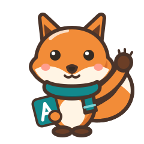
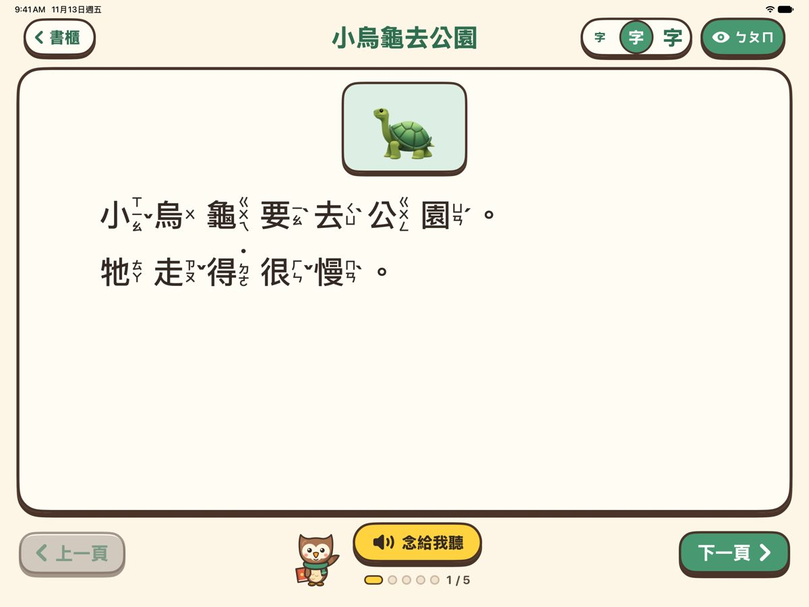
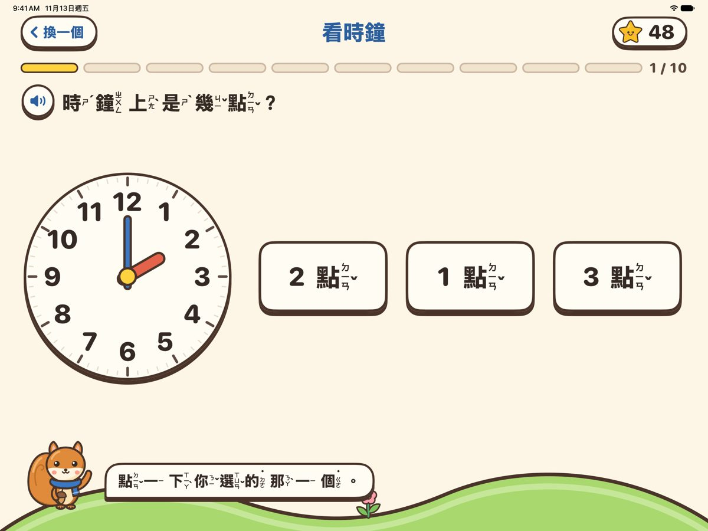

「上小學我不怕」是給準備上小學、和剛上一、二年級的孩子用的學習 App（數學另有三年級的直式練習），適用 iPad 與 iPhone（橫向）。五位動物朋友帶孩子練注音、讀注音故事、認識語詞、算數學和看時鐘，還有英文字母、單字和句子。

注音
- 37 個注音符號：看大字、聽發音、看例詞、跟著描描看。
- 手寫考試：「聽音寫符號」與「看圖拼音」，用手指或觸控筆都能寫。

故事
- 20 篇有注音的短故事，國字旁邊都標好注音；分「生活故事」和「經典故事」（烏鴉喝水、龜兔賽跑、三隻小豬等寓言與民間故事）兩區。
- 可以一句一句念給孩子聽、點一個字聽它的讀音；字可以調大。

數學
- 一年級加法和減法：10 以內或 18 以內（個位數相加減，含進位、退位），可以開圓點提示。
- 數一數、比大小、排第幾個、看時鐘、時鐘走一圈。
- 認識時鐘：按「長針走一圈」看長針和短針怎麼走，可以切換整點和半點。
- 二年級：九九乘法、乘法填空、乘法的意思、乘法應用題、幾時幾分、經過多久、兩步驟的加減、比大小與數方格，以及直式加法、直式減法、直式乘法。
- 三年級：直式加法、直式減法、直式乘法，數字到百位、千位。
- 年級依 108 課綱並參考孩子實際的學習進度分類。
- 數學題目預設不念出來，讓孩子自己讀題目；按喇叭鈕才念，答錯時的提示照樣會念。
語詞
- 你我他、量詞、選字詞、標點、部首、語詞填空，共 6 組 250 題。
- 題目都有注音，做完一題會把完整句子念一遍。

英文
- 26 個字母：看大寫、小寫，聽字母和發音，在四線格上描描看；也可以聽聲音手寫字母，考考自己。
- 一、二年級常用的單字和句子，分「一年級」「二年級」和「挑戰」，依主題用字卡學習，再做聽音選圖、拼字、句子重組等測驗。
- 用清楚好認的印刷體（和學校教的寫法一樣），不教草寫；字母、單字和句子都有朗讀。
畫面




讓家長放心
- 完全離線：不需要網路，所有功能都在裝置上執行。
- 不需要帳號，不收集任何資料。
- 沒有廣告，沒有內購。
- 學習進度只存在裝置上。詳見隱私權政策。